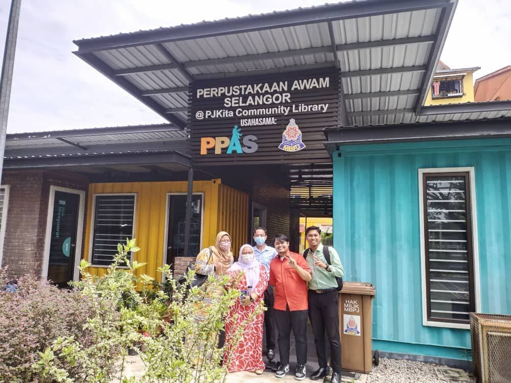

</head>

<body style="background-color: cyan;">

<center><a href="family.html"></a>
<a href="education.html"></a>
<a href="gallery.html"></a>
<a href="experience.html"></a>
<a href="biodata.html"></a>
<a href="index.html"></a></center>


<br>
<br>
<br>

<body>
    <h1><center><font size="8">MY EXPERIENCE</h6>
    <center><p>from internship at PPAS </p></center>

<center></a></center>
<br>
<br>
<br>

<body>
    <h1><center><font size="8">My experience that i got from intership is skill to interact with other people and also given a chance to visiting many branch for study purpose</h6>

<br>
<br>
<br>

<center></a></center>

<br>
<body>
    <h1><center><font size="8">My experience that i got from intership is wearing a zebra'costume and going to dance on stage for school holiday activity in PPAS</h6>

